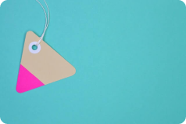
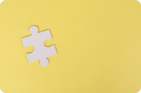
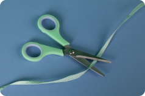

О мне
I’am Altynbek
я веб разработчик и дизайнер
Привет! Меня зовут Алтынбек, мне 15 лет, и я учусь в школе программирования Qiber School. У меня двухлетний стаж работы в веб-разработке. Я владею HTML, CSS и JavaScript, а также умею работать с различными фреймворками и библиотеками, включая Bootstrap, jQuery и React. Кроме того, я имею навыки работы с графическими инструментами, в том числе Фигмой.
Мое портфолио включает разнообразные проекты, от простых лендингов до полноценных веб-приложений. Я также имею опыт работы в команде, используя системы контроля версий, такие как Git.
Я горжусь своими достижениями в молодом возрасте и стараюсь продолжать учиться и развиваться в сфере веб-разработки. Буду рад присоединиться к команде профессионалов и внести свой вклад в увлекательный мир программирования. Спасибо!
Я всегда открыт новым идеям и технологиям, и активно следую последним трендам в веб-разработке. Я постоянно изучаю новые концепции и подходы, чтобы улучшить свои навыки и расширить свой инструментарий.
В моем портфолио вы найдете проекты, которые я разрабатывал как самостоятельно, так и в команде. Я стремлюсь создавать веб-приложения, которые не только функциональны, но и имеют привлекательный дизайн и отзывчивый пользовательский интерфейс.
Мои работы включают примеры адаптивного веб-дизайна, интерактивных элементов, анимации и оптимизации производительности. Я также уделяю внимание пользовательскому опыту, чтобы создавать удобные и интуитивно понятные интерфейсы.

Мой навыки
языки программирования
HTML
CSS
GIT
дизайн
Figma
ПОРТФОЛИО
смотреть детали
  контакты
Почта
bsamanbek@gmail.com
Номер телефона
+7 (707) 777 77-77
Адрес
Казакстан